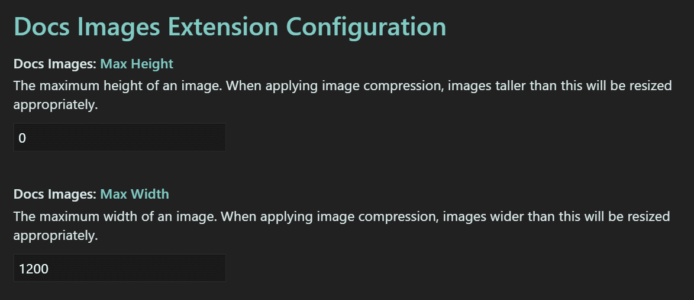

Image compression
Extension name
The Docs Authoring Pack, Visual Studio Code meta extension is comprised of multiple sub extensions. This feature is included in the Docs Images extension. The Docs Markdown extension is part of the Docs Authoring Pack, there is no need to install it separately.
Summary
All documentation is provided via the web, with the exception of PDF versions of docs. When serving static content, it is best to minimize the number of bytes sent over the wire. One way to do that is to compress images at rest.
The Docs Authoring Pack extension includes image compression context menu items. The following image types / extensions are supported:
- *.png
- *.jpg
- *.jpeg
- *.gif
- *.svg
- *.webp
The lossless image compression algorithms are used, where applicable.
Compress image
From the Explorer navigation pane, right-click on an image file - then select the Compress image option. The image is then compressed.
Compress images in folder
From the Explorer navigation pane, right-click on a folder containing images - then select the Compress images in folder option. All images in the folder are compressed.
Considerations
Large resolution images are implicitly resized. The maximum dimensions are based on the platform suggested max width of 1,200px. The max is only used when images are larger than they are recommended to be, and they will maintain the aspect ratio when automatically resized.
Preferences
The maximum dimensions are configurable, but a default max width of 1200 pixels exists. To configure the max dimensions, select File -> Preferences -> Settings and filter by "Docs Image Extension".

Note
A value of 0 in either the Max Width or Max Height will simply ignore resolution variances.
In action
Below is a brief demonstration of this feature.